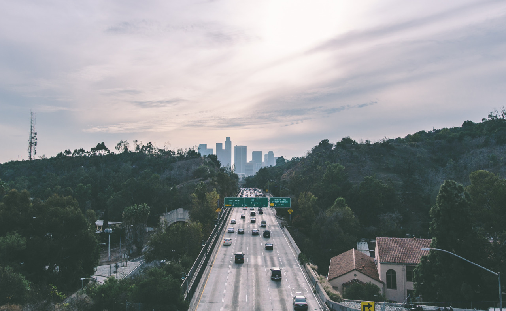
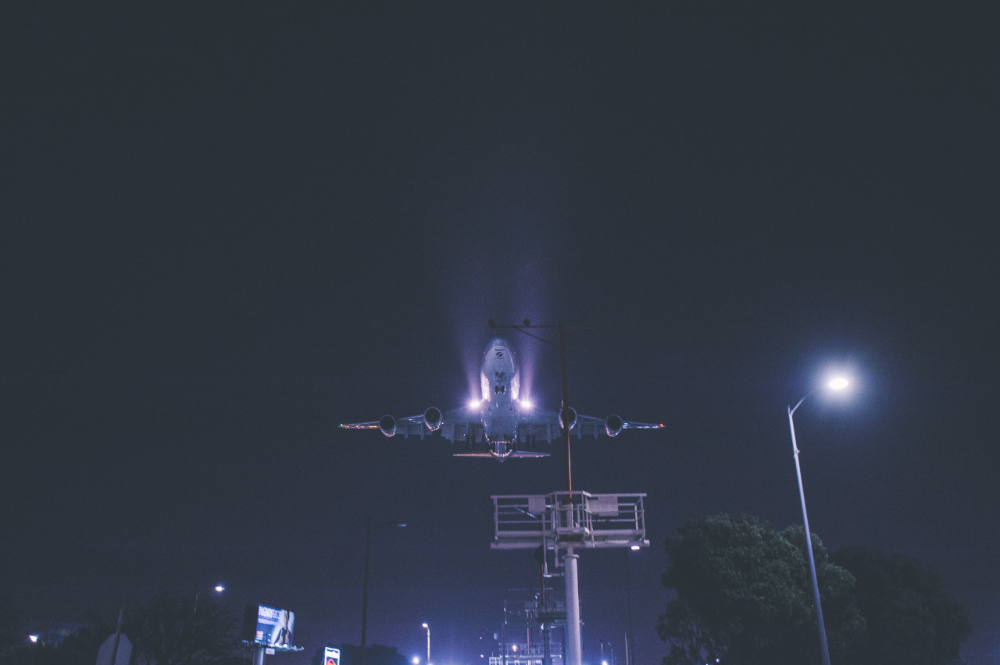
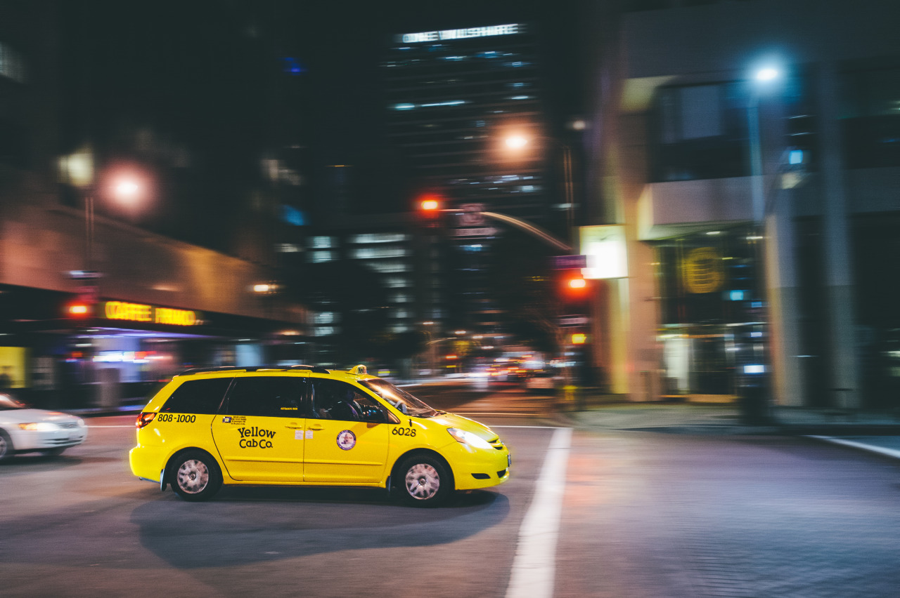
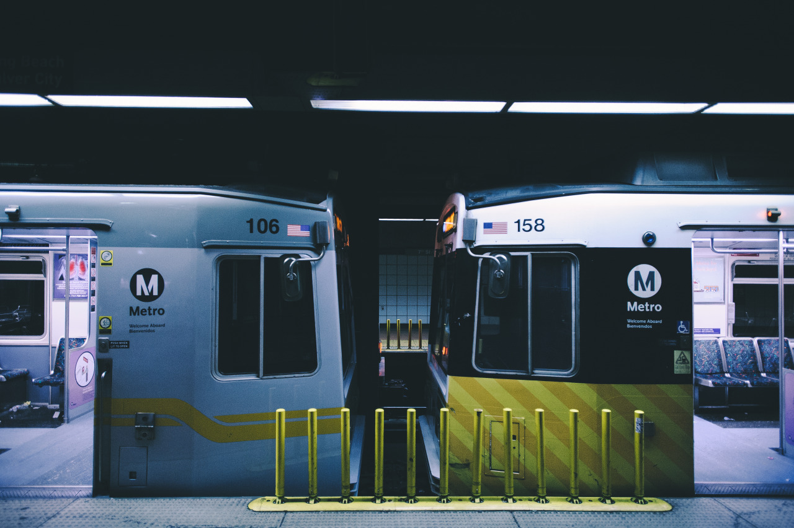

- INTRODUCTION
Los Angeles is a city that is both loved and hated. It’s a city that creates both dreams and brings back nightmares. Los Angeles means something different for everyone. My aim in this interview project is to hear and share the stories of the people of Los Angeles. Specifically, I’m interested in not only what people think about Los Angeles but also how they came to those conclusions. This project starts with the story of my own encounter with Los Angeles. - 
- 
- It took me two and a half years to love Los Angeles. When I came to Los Angeles for school I realized that what I had seen on television and the Internet about Los Angeles didn’t match what I saw with my own eyes. South Central didn’t exactly contain the glamor you typically envision when you think about this city. So, I resented living here. My interest in this city only grew when I began to leave the walls of USC and explore regions other than Hollywood or Santa Monica. As a photographer I’d try to find the most photographic and also least touristy spots in Los Angeles. My nights out shooting photos would lead me to the quiet streets of Downtown and the bridges that hung above the 110.
- I still remember eating an Original Tommy’s burger on Beverly Boulevard for the first time. I remember how alive I felt eating that greasy chiliburger at 2 in the morning with a bunch of locals that I didn’t know. Through these calm and almost meditative moments, I slowly began to fall in love with this city. Exploring unknown places, conversing with natives, and learning about the history here have given me a deeper appreciation for Los Angeles. What was once a foreign city became a second home for me. Thus, Los Angeles is a city that opened its doors to me only when I took the initiative to go out and experience all that it has to offer. I had to discover for myself the magic of this city. And it wasn’t through television, movies, music, or the Internet—it was through a very personal experience.

- 
- My experiences remind me of Christopher Isherwood’s excerpt, California is a tragic country. Isherwood describes how, “to live sanely in Los Angeles you have to cultivate the art of staying awake. You must learn to resist the unceasing hypnotic suggestions of radio, the billboards, the movies and the newspapers… They have a planned life for you”. I think the reason why Isherwood thinks this is the way to live sanely is because the input from these media outlets have twisted one’s perception of Los Angeles. Similarly, I had these preconceived notions of what Los Angeles would be like when I first arrived. My way of “staying awake”, then, was to leave my dorm and interact with Los Angeles—to ultimately create for myself my own perceptions about this city. Similarly, I want to uncover through my interviews how others have stayed awake in Los Angeles.
- When I think about what I’ve experienced these past 3 years, I’m reminded of Rev. Paul Yung’s sermon, Who Is My Neighbor? In his sermon, Rev. Yung preaches the importance of loving your fellow neighbor during a time when love seemed so distance. “Love overcomes the violence…and only love will last forever”. These were words that the people desperately needed to hear. And as I read Rev. Yung sermon, I think about this idea of preaching, where a person preaching not only preaches but also convicts. Sometimes I feel as though Los Angeles has preached to me. It has preached to me what it means to love a city and the people who live in it. It has preached to me what it means to live and die and be born again in a city that I once resented. I’ve learned that the only way to know a city and a person is through meaningful interactions and relationships. The history, buildings, food, and people in Los Angeles have taught me the importance of appreciating and understanding the place where I live. So during these past 3 years of discovering my love for Los Angeles, it was really Los Angeles that loved me. My one word to describe Los Angeles is “alive”. Los Angeles is alive and breathing.
- 